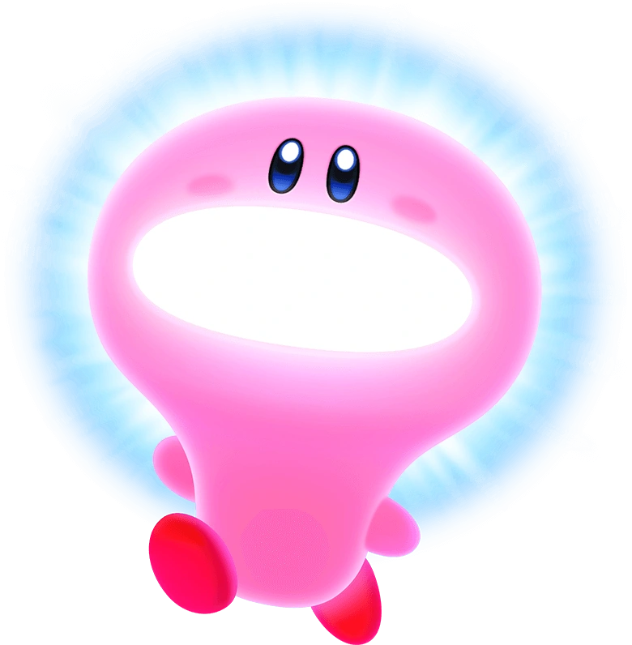

Quotes - The Memorable

"Haaa!"
"I feel like some apple pie!"
"To get this far you must have a-MAZE-ing skill Tee hee hee!!"
History - Released Kirby Games
- (1992) Dream Land
- (1993) Adventure
- (1993) Pinball Land
- (1994) Dream Course
- (1995) Avalanche
- (1995) Dream Land 2
- (1995) Block Ball
- (1996) Toy Box
- (1996) Super Star
- (1997) Star Stacker
- (1997) Dream Land 3
- (1998) Super Star Stacker
- (2000) 64: The Crystal Shards
- (2000) Tilt 'n' Tumble
- (2002) Nightmare in Dream Land
- (2003) Air Ride
- (2004) Amazing Mirror
- (2005) Canvas Curse
- (2006) Squeak Squad
- (2008) Super Star Ultra
- (2010) Epic Yarn
- (2011) Mass Attack
- (2021) Return to Dream Land
- (2012) Dream Collection
- (2014) Triple Deluxe
- (2014) Fighters Deluxe
- (2014) Dedede's Drum Dash Deluxe
- (2015) Rainbow Curse
- (2016) Planet Robobot
- (2017) Team Kirby Clash Deluxe
- (2017) Blowout Blast
- (2017) Battle Royale
- (2018) Star Allies
- (2019) Extra Epic Yarn
- (2019) Super Kirby Clash
- (2020) Fighters 2
- (2022) Forgotten Land
- (2022) Dream Buffet
- (2023) Return to Dream Land Deluxe
Transformations - Fantasy to Modern
Kirby is a versatile creature. It can transform into a wide variety of attacking modes and occupations, and eventually evolved itself to being able to latch the mind of Kirby onto a modern machinery with its seemingly infinitely big mouth, such as a car. You can find a complete list of Kirby's copy abilities and Mouthful mode here and here.
May the light of Kirby always point you in the right direction!
